pacman::p_load(spdep, tmap, sf, ClustGeo,
ggpubr, cluster, factoextra,
heatmaply, corrplot, psych, tidyverse, GGally,
knitr, mclust)Hands-on Exercise 6
Geographical Segmentation with Spatially Constrained Clustering Techniques
55 townships of Shan State, Myanmar, 2014 census myanmar_township_boundaries shapefile, Shan-ICT.csv sf spdep tmap ClustGeo cluster factoextra heatmaply tidyverse
1 Overview
This exercise follows chapter 12 of the book. The aim is to split the townships of Shan State in Myanmar into groups with similar access to information and communication technology (ICT), such as radio, TV, phones and computers.
The analytical question is how to segment Shan State into homogeneous regions using several ICT measures at once. I try three methods.
- Hierarchical clustering groups townships by their ICT profile only. It ignores where they are.
- SKATER cuts a minimum spanning tree of neighbouring townships, so every cluster is one connected area.
- ClustGeo mixes attribute distance with geographic distance. A weight called alpha sets how much location counts.
2 Loading the Packages
sf and spdep handle the boundaries and neighbours, and tmap draws the maps. cluster, factoextra and ClustGeo do the clustering. corrplot, ggpubr, heatmaply and GGally are for the charts, and psych gives a fuller summary table. mclust is not in the book. I use its adjustedRandIndex() to compare cluster results in the last section. The book also loads NbClust but never calls it, so I left it out.
3 Data Import and Preparation
3.1 Importing the Geospatial Data
st_read() of sf reads the township boundaries for the whole of Myanmar. filter() keeps the three Shan State regions, and select() keeps the name and code columns.
shan_sf <- st_read(dsn = "data/geospatial",
layer = "myanmar_township_boundaries") %>%
filter(ST %in% c("Shan (East)", "Shan (North)", "Shan (South)")) %>%
select(c(2:7))Reading layer `myanmar_township_boundaries' from data source
`/Users/czxtom/Documents/Programming/GAA/ISSS626-GAA/Hands-on_Ex/Hands-on_Ex06/data/geospatial'
using driver `ESRI Shapefile'
Simple feature collection with 330 features and 14 fields
Geometry type: MULTIPOLYGON
Dimension: XY
Bounding box: xmin: 92.17275 ymin: 9.671252 xmax: 101.1699 ymax: 28.54554
Geodetic CRS: WGS 84glimpse(shan_sf)Rows: 55
Columns: 7
$ ST <chr> "Shan (North)", "Shan (South)", "Shan (South)", "Shan (South)…
$ ST_PCODE <chr> "MMR015", "MMR014", "MMR014", "MMR014", "MMR015", "MMR014", "…
$ DT <chr> "Mongmit", "Taunggyi", "Taunggyi", "Taunggyi", "Mongmit", "Ta…
$ DT_PCODE <chr> "MMR015D008", "MMR014D001", "MMR014D001", "MMR014D001", "MMR0…
$ TS <chr> "Mongmit", "Pindaya", "Ywangan", "Pinlaung", "Mabein", "Kalaw…
$ TS_PCODE <chr> "MMR015017", "MMR014006", "MMR014007", "MMR014009", "MMR01501…
$ geometry <MULTIPOLYGON [°]> MULTIPOLYGON (((96.96001 23..., MULTIPOLYGON (((…There are 55 townships, stored in WGS 84 longitude and latitude.
3.2 Importing the Aspatial Data
read_csv() of readr reads the 2014 census counts for each township.
ict <- read_csv("data/aspatial/Shan-ICT.csv")
summary(ict) District Pcode District Name Township Pcode Township Name
Length :55 Length :55 Length :55 Length :55
N.unique :14 N.unique :14 N.unique :55 N.unique :55
N.blank : 0 N.blank : 0 N.blank : 0 N.blank : 0
Min.nchar:10 Min.nchar: 4 Min.nchar: 9 Min.nchar: 4
Max.nchar:10 Max.nchar: 9 Max.nchar: 9 Max.nchar:10
Total households Radio Television Land line phone
Min. : 3318 Min. : 115 Min. : 728 Min. : 20.0
1st Qu.: 8711 1st Qu.: 1260 1st Qu.: 3744 1st Qu.: 266.5
Median :13685 Median : 2497 Median : 6117 Median : 695.0
Mean :18369 Mean : 4487 Mean :10183 Mean : 929.9
3rd Qu.:23471 3rd Qu.: 6192 3rd Qu.:13906 3rd Qu.:1082.5
Max. :82604 Max. :30176 Max. :62388 Max. :6736.0
Mobile phone Computer Internet at home
Min. : 150 Min. : 20.0 Min. : 8.0
1st Qu.: 2037 1st Qu.: 121.0 1st Qu.: 88.0
Median : 3559 Median : 244.0 Median : 316.0
Mean : 6470 Mean : 575.5 Mean : 760.2
3rd Qu.: 7177 3rd Qu.: 507.0 3rd Qu.: 630.5
Max. :48461 Max. :6705.0 Max. :9746.0 3.3 Deriving the Penetration Rates
The counts mostly follow the number of households. Taunggyi has the most radios simply because it has the most households. So mutate() turns each count into a rate per 1,000 households, and rename() gives the columns shorter names.
ict_derived <- ict %>%
mutate(`RADIO_PR` = `Radio`/`Total households`*1000) %>%
mutate(`TV_PR` = `Television`/`Total households`*1000) %>%
mutate(`LLPHONE_PR` = `Land line phone`/`Total households`*1000) %>%
mutate(`MPHONE_PR` = `Mobile phone`/`Total households`*1000) %>%
mutate(`COMPUTER_PR` = `Computer`/`Total households`*1000) %>%
mutate(`INTERNET_PR` = `Internet at home`/`Total households`*1000) %>%
rename(`DT_PCODE` =`District Pcode`,`DT`=`District Name`,
`TS_PCODE`=`Township Pcode`, `TS`=`Township Name`,
`TT_HOUSEHOLDS`=`Total households`,
`RADIO`=`Radio`, `TV`=`Television`,
`LLPHONE`=`Land line phone`, `MPHONE`=`Mobile phone`,
`COMPUTER`=`Computer`, `INTERNET`=`Internet at home`)ict_derived %>%
select(ends_with("_PR")) %>%
describe() %>%
select(n, mean, sd, min, median, max) %>%
kable(digits = 1)| n | mean | sd | min | median | max | |
|---|---|---|---|---|---|---|
| RADIO_PR | 55 | 215.7 | 105.4 | 21.1 | 211.0 | 484.5 |
| TV_PR | 55 | 509.5 | 159.4 | 116.0 | 517.2 | 842.5 |
| LLPHONE_PR | 55 | 51.1 | 40.7 | 2.8 | 37.6 | 181.5 |
| MPHONE_PR | 55 | 314.1 | 175.7 | 36.4 | 305.3 | 735.4 |
| COMPUTER_PR | 55 | 24.4 | 20.5 | 3.3 | 19.0 | 92.4 |
| INTERNET_PR | 55 | 30.6 | 28.6 | 1.0 | 22.8 | 118.0 |
TV and mobile phone rates are in the hundreds per 1,000 households. Computer and internet rates are in the tens. This difference in scale matters later.
4 Exploratory Data Analysis
4.1 Counts Against Rates
geom_histogram() and geom_boxplot() of ggplot2 compare the radio count with the radio rate. ggarrange() of ggpubr puts the four charts in one figure.
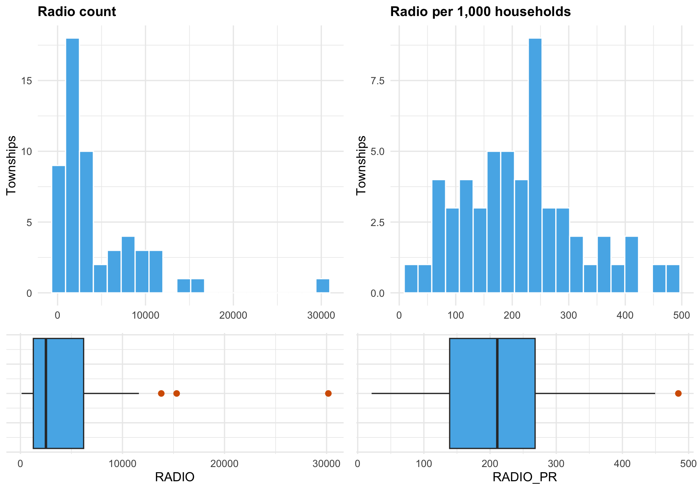
eda_hist <- function(var, title) {
ggplot(ict_derived, aes(x = .data[[var]])) +
geom_histogram(bins = 20, fill = "#56B4E9", colour = "white") +
labs(x = NULL, y = "Townships", title = title) +
theme_minimal(base_size = 13) +
theme(plot.title = element_text(size = 14, face = "bold"))
}
eda_box <- function(var) {
ggplot(ict_derived, aes(x = .data[[var]])) +
geom_boxplot(fill = "#56B4E9", outlier.colour = "#D55E00",
outlier.size = 2.5) +
labs(x = var, y = NULL) +
theme_minimal(base_size = 13) +
theme(axis.text.y = element_blank())
}
ggarrange(eda_hist("RADIO", "Radio count"),
eda_hist("RADIO_PR", "Radio per 1,000 households"),
eda_box("RADIO"), eda_box("RADIO_PR"),
ncol = 2, nrow = 2, heights = c(2, 1))The radio count is strongly right skewed. Its three outliers, Taunggyi, Lashio and Nyaungshwe, are the three townships with the most households. Taunggyi alone has 30,176 radios. The rate is much closer to symmetric, with 1 high outlier left. The top rate is in Ywangan, a small township, and not Taunggyi.
4.2 Distribution of All Six Rates
The book builds six histograms and joins them with ggarrange(). I use pivot_longer() and facet_wrap() instead, which gives the same six panels from one call.
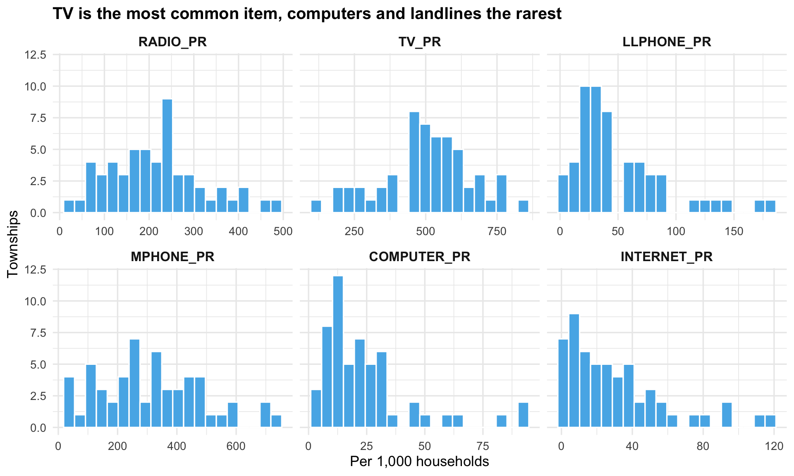
ict_derived %>%
select(ends_with("_PR")) %>%
pivot_longer(everything(), names_to = "variable", values_to = "rate") %>%
mutate(variable = factor(variable,
levels = c("RADIO_PR", "TV_PR", "LLPHONE_PR",
"MPHONE_PR", "COMPUTER_PR", "INTERNET_PR"))) %>%
ggplot(aes(x = rate)) +
geom_histogram(bins = 20, fill = "#56B4E9", colour = "white") +
facet_wrap(~ variable, ncol = 3, scales = "free_x") +
labs(x = "Per 1,000 households", y = "Townships",
title = "TV is the most common item, computers and landlines the rarest") +
theme_minimal(base_size = 13) +
theme(plot.title = element_text(size = 15, face = "bold"),
strip.text = element_text(size = 12, face = "bold"))TV and mobile phone are roughly symmetric. Landline, computer and internet are all right skewed, with most townships near zero and a few far ahead.
4.3 Joining the Two Data Sets
Before joining I check that the township names in the shapefile and the csv agree for every code.
name_check <- shan_sf %>%
st_drop_geometry() %>%
select(TS_PCODE, TS) %>%
inner_join(select(ict_derived, TS_PCODE, TS), by = "TS_PCODE")
c(matched = nrow(name_check),
same_name = sum(name_check$TS.x == name_check$TS.y)) matched same_name
55 55 left_join() of dplyr then attaches the rates to the boundaries by TS_PCODE.
shan_sf <- left_join(shan_sf,
select(ict_derived, -DT_PCODE, -DT, -TS),
by = "TS_PCODE")
CautionWhere I differ from the book
The book joins the full table, so the district and township columns appear twice. R renames them TS.x and TS.y, and the rest of the chapter has to use TS.x. All 55 codes match and the names agree in every case, so I drop the duplicate columns from the csv before joining. The township column stays TS. The book also saves and reloads the joined data as an rds file. I skip that because freeze: true already stops the page from re-running.
4.4 Choropleth Maps
tm_shape() and tm_polygons() of tmap map the number of households, the radio count and the radio rate. Each uses Jenks natural breaks with five classes, as in the book. tmap_arrange() puts them side by side.
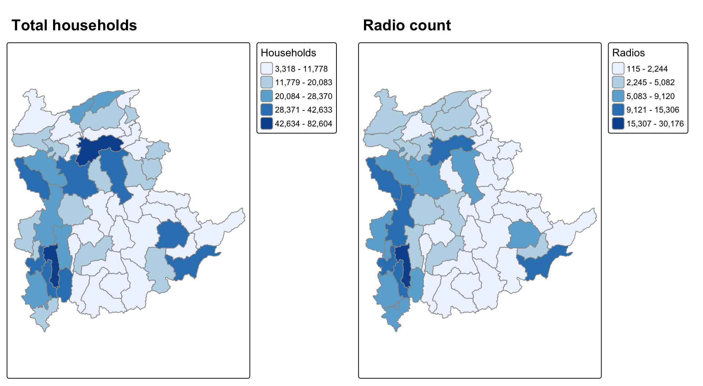
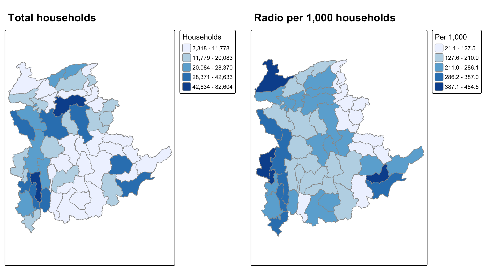
jenks_map <- function(var, legend_title, title) {
tm_shape(shan_sf) +
tm_polygons(fill = var,
fill.scale = tm_scale_intervals(style = "jenks", n = 5,
values = "brewer.blues"),
fill.legend = tm_legend(title = legend_title,
position = tm_pos_out("right", "center")),
col = "grey60") +
tm_title(title, size = 1.3, fontface = "bold")
}
tmap_arrange(jenks_map("TT_HOUSEHOLDS", "Households", "Total households"),
jenks_map("RADIO", "Radios", "Radio count"),
ncol = 2)
tmap_arrange(jenks_map("TT_HOUSEHOLDS", "Households", "Total households"),
jenks_map("RADIO_PR", "Per 1,000", "Radio per 1,000 households"),
ncol = 2)The household map and the radio count map look almost the same. Both are dark around Taunggyi and Lashio. The rate map is different. Its highest classes run down the west side of the state, while much of the north east is pale. This confirms the rates and not the counts should go into the clustering.
CautionWhere I differ from the book
The book uses tmap v3 code such as tm_fill(style = "jenks"), tm_borders(alpha = 0.5) and qtm(). These give deprecation messages in tmap 4.4, so I rewrote every map in v4 syntax with fill.scale, fill.legend and tm_title(). All legends sit outside the map.
5 Correlation Analysis
cor() computes the correlation between the six rates and corrplot.mixed() of corrplot draws it. Ellipses are in the lower triangle and numbers in the upper triangle.
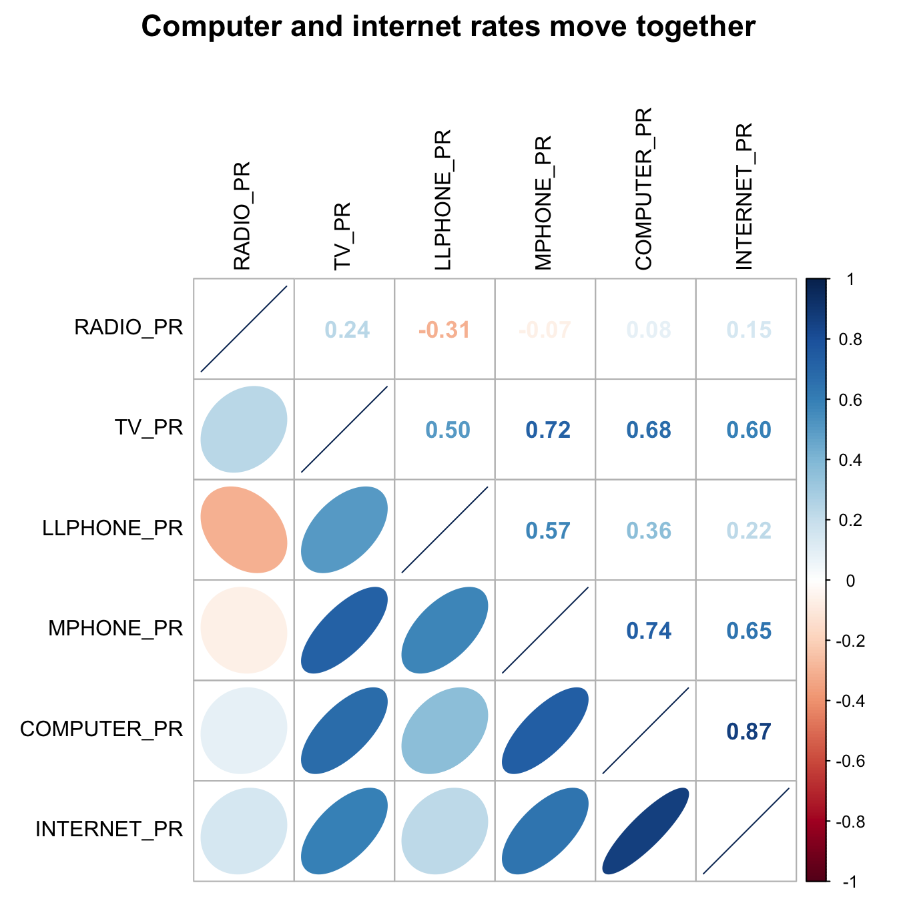
cluster_vars.cor <- cor(select(ict_derived, ends_with("_PR")))
corrplot.mixed(cluster_vars.cor,
lower = "ellipse",
upper = "number",
tl.pos = "lt",
diag = "l",
tl.col = "black",
number.cex = 1.1,
tl.cex = 1,
mar = c(0, 0, 4, 0))
mtext("Computer and internet rates move together", side = 3,
line = 2.5, cex = 1.4, font = 2)COMPUTER_PR and INTERNET_PR have a correlation of 0.87. If both went into the clustering, the same information would count twice. Like the book, I keep COMPUTER_PR and drop INTERNET_PR. TV and mobile phone also correlate at 0.72, but the book keeps both, and so do I. Radio is the odd one out. It is only weakly linked to the others and negatively linked to landlines.
CautionWhere I differ from the book
The book selects the rates with ict_derived[,12:17]. I select them by name with ends_with("_PR"), so it still works if the csv gains or loses a column.
6 Hierarchical Cluster Analysis
6.1 Extracting the Clustering Variables
st_set_geometry(NULL) drops the geometry so only the attribute table is left. I keep the township name and the five rates.
cluster_vars <- shan_sf %>%
st_set_geometry(NULL) %>%
select("TS", "RADIO_PR", "TV_PR", "LLPHONE_PR", "MPHONE_PR", "COMPUTER_PR")
head(cluster_vars, 5) TS RADIO_PR TV_PR LLPHONE_PR MPHONE_PR COMPUTER_PR
1 Mongmit 286.1852 554.1313 35.30618 260.6944 12.15939
2 Pindaya 417.4647 505.1300 19.83584 162.3917 12.88190
3 Ywangan 484.5215 260.5734 11.93591 120.2856 4.41465
4 Pinlaung 231.6499 541.7189 28.54454 249.4903 13.76255
5 Mabein 449.4903 708.6423 72.75255 392.6089 16.45042The township names become the row names, so they label the dendrogram later. Then the name column is dropped.
row.names(cluster_vars) <- cluster_vars$"TS"
shan_ict <- select(cluster_vars, c(2:6))
head(shan_ict, 5) RADIO_PR TV_PR LLPHONE_PR MPHONE_PR COMPUTER_PR
Mongmit 286.1852 554.1313 35.30618 260.6944 12.15939
Pindaya 417.4647 505.1300 19.83584 162.3917 12.88190
Ywangan 484.5215 260.5734 11.93591 120.2856 4.41465
Pinlaung 231.6499 541.7189 28.54454 249.4903 13.76255
Mabein 449.4903 708.6423 72.75255 392.6089 16.450426.2 Data Standardisation
The rates are on very different scales. normalize() of heatmaply rescales each one to the range 0 to 1 (min-max). scale() of base R turns each one into z-scores with mean 0 and standard deviation 1. describe() of psych checks the result.
shan_ict.std <- normalize(shan_ict)
summary(shan_ict.std) RADIO_PR TV_PR LLPHONE_PR MPHONE_PR
Min. :0.0000 Min. :0.0000 Min. :0.0000 Min. :0.0000
1st Qu.:0.2544 1st Qu.:0.4600 1st Qu.:0.1123 1st Qu.:0.2199
Median :0.4097 Median :0.5523 Median :0.1948 Median :0.3846
Mean :0.4199 Mean :0.5416 Mean :0.2703 Mean :0.3972
3rd Qu.:0.5330 3rd Qu.:0.6750 3rd Qu.:0.3746 3rd Qu.:0.5608
Max. :1.0000 Max. :1.0000 Max. :1.0000 Max. :1.0000
COMPUTER_PR
Min. :0.00000
1st Qu.:0.09598
Median :0.17607
Mean :0.23692
3rd Qu.:0.29868
Max. :1.00000 shan_ict.z <- scale(shan_ict)
describe(shan_ict.z) %>%
select(n, mean, sd, min, max, skew) %>%
kable(digits = 2)| n | mean | sd | min | max | skew | |
|---|---|---|---|---|---|---|
| RADIO_PR | 55 | 0 | 1 | -1.85 | 2.55 | 0.48 |
| TV_PR | 55 | 0 | 1 | -2.47 | 2.09 | -0.38 |
| LLPHONE_PR | 55 | 0 | 1 | -1.19 | 3.20 | 1.37 |
| MPHONE_PR | 55 | 0 | 1 | -1.58 | 2.40 | 0.48 |
| COMPUTER_PR | 55 | 0 | 1 | -1.03 | 3.31 | 1.80 |
NoteLearning diary
Z-scores assume the variable is close to normal. The z-score table shows the skew is unchanged by scaling. COMPUTER_PR still has a skew of 1.8. So scaling evens out the range of each variable, but not the shape. The book makes the same point and suggests min-max for skewed data.
6.3 Visualising the Standardised Variables
geom_histogram() draws the radio rate three ways, raw, min-max and z-score.
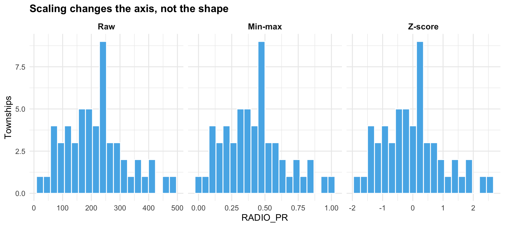
tibble(Raw = shan_ict$RADIO_PR,
`Min-max` = shan_ict.std$RADIO_PR,
`Z-score` = shan_ict.z[, "RADIO_PR"]) %>%
pivot_longer(everything(), names_to = "method", values_to = "value") %>%
mutate(method = factor(method, levels = c("Raw", "Min-max", "Z-score"))) %>%
ggplot(aes(x = value)) +
geom_histogram(bins = 20, fill = "#56B4E9", colour = "white") +
facet_wrap(~ method, scales = "free_x") +
labs(x = "RADIO_PR", y = "Townships",
title = "Scaling changes the axis, not the shape") +
theme_minimal(base_size = 13) +
theme(plot.title = element_text(size = 15, face = "bold"),
strip.text = element_text(size = 12, face = "bold"))The three histograms have the same bars. Only the numbers on the x axis change. The book also draws density curves, which show the same thing, so I left them out.
6.4 Computing the Proximity Matrix
dist() computes the Euclidean distance between every pair of townships across the five rates.
proxmat <- dist(shan_ict, method = "euclidean")
CautionWhere I differ from the book
The book shows both scaling methods and then builds the distance matrix from the raw rates in shan_ict. I do the same in the main part so my results can be checked against the book. But it has a cost. A rate with a wide range adds more to the distance. In the section Raw Rates Against Z-scores I measure how much and rerun the clustering on z-scores.
6.5 Selecting the Clustering Algorithm
agnes() of cluster reports an agglomerative coefficient for each linkage method. Values closer to 1 mean a stronger cluster structure. map_dbl() of purrr runs it for four methods.
m <- c("average", "single", "complete", "ward")
names(m) <- c("average", "single", "complete", "ward")
ac <- function(x) {
agnes(shan_ict, method = x)$ac
}
map_dbl(m, ac) average single complete ward
0.8131144 0.6628705 0.8950702 0.9427730 Ward’s method gives the highest coefficient, 0.943, so I use it from here on.
6.6 Computing the Hierarchical Clustering
hclust() of base R builds the tree with Ward’s method.
hclust_ward <- hclust(proxmat, method = "ward.D2")
CautionWhere I differ from the book
The book uses method = "ward.D". R has two Ward options. ward.D2 squares the distances before merging, which is Ward’s original criterion. ward.D does not. The agnes() check above and the hcut() used for the gap statistic below both use the squared version. So ward.D2 keeps the whole section on one method. The two trees do give different results. Cut at six clusters, they only agree with an adjusted Rand index of 0.77, where 1 means identical. So my clusters will not match the book’s.
6.7 Determining the Number of Clusters
clusGap() of cluster computes the gap statistic for 1 to 10 clusters. It compares how tight the clusters are with how tight they would be in random data. hcut() of factoextra does the clustering inside it.
set.seed(12345)
gap_stat <- clusGap(shan_ict,
FUN = hcut,
nstart = 25,
K.max = 10,
B = 50)
print(gap_stat, method = "firstmax")Clustering Gap statistic ["clusGap"] from call:
clusGap(x = shan_ict, FUNcluster = hcut, K.max = 10, B = 50, nstart = 25)
B=50 simulated reference sets, k = 1..10; spaceH0="scaledPCA"
--> Number of clusters (method 'firstmax'): 1
logW E.logW gap SE.sim
[1,] 8.407129 8.680794 0.2736651 0.04460994
[2,] 8.130029 8.350712 0.2206824 0.03880130
[3,] 7.992265 8.202550 0.2102844 0.03362652
[4,] 7.862224 8.080655 0.2184311 0.03784781
[5,] 7.756461 7.978022 0.2215615 0.03897071
[6,] 7.665594 7.887777 0.2221833 0.03973087
[7,] 7.590919 7.806333 0.2154145 0.04054939
[8,] 7.526680 7.731619 0.2049390 0.04198644
[9,] 7.458024 7.660795 0.2027705 0.04421874
[10,] 7.377412 7.593858 0.2164465 0.04540947fviz_gap_stat() of factoextra plots the result.
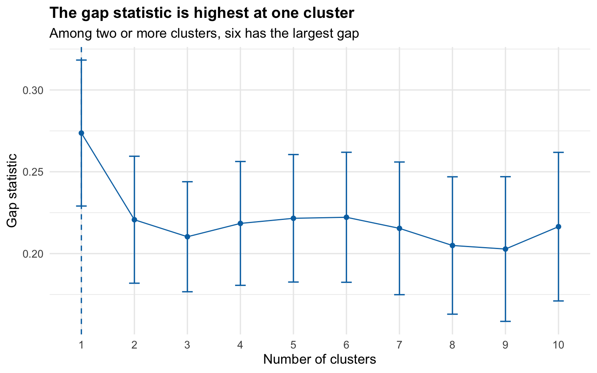
fviz_gap_stat(gap_stat, linecolor = "#0072B2") +
labs(title = "The gap statistic is highest at one cluster",
subtitle = "Among two or more clusters, six has the largest gap",
x = "Number of clusters", y = "Gap statistic") +
theme_minimal(base_size = 13) +
theme(plot.title = element_text(size = 15, face = "bold"))The gap statistic recommends one cluster, which is no use for segmentation. Among two or more clusters, six has the largest gap at 0.2222. But five is at 0.2216, almost the same. Like the book, I go with six. I come back to whether six is a good choice in How Many Clusters.
6.8 Interpreting the Dendrogram
plot() draws the tree and rect.hclust() boxes the six clusters.
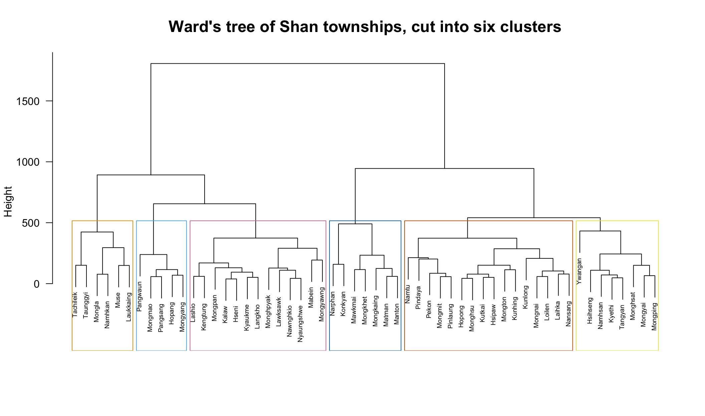
okabe6 <- c("#E69F00", "#56B4E9", "#CC79A7", "#0072B2", "#D55E00", "#F0E442")
plot(hclust_ward, cex = 0.6, xlab = "", sub = "",
main = "Ward's tree of Shan townships, cut into six clusters",
cex.main = 1.5, las = 1)
rect.hclust(hclust_ward, k = 6, border = okabe6)
CautionWhere I differ from the book
The book draws the boxes with border = 2:5. That is four base R colours for six boxes, so two are reused, and one of them is green. I use six Okabe-Ito colours without green, which I set once as okabe6 and reuse for every cluster map below.
6.9 Visually-driven Hierarchical Clustering
heatmaply() of heatmaply draws an interactive heatmap with a dendrogram of the rows. It needs a matrix, so data.matrix() converts the data frame first.
shan_ict_mat <- data.matrix(shan_ict)heatmaply(normalize(shan_ict_mat),
Colv = NA,
dist_method = "euclidean",
hclust_method = "ward.D2",
seriate = "OLO",
colors = Blues,
k_row = 6,
margins = c(NA, 200, 60, NA),
fontsize_row = 4,
fontsize_col = 5,
main = "Geographic Segmentation of Shan State by ICT indicators",
xlab = "ICT Indicators",
ylab = "Townships of Shan State")
NoteLearning diary
The six row groups in the heatmap are not the same six clusters as the dendrogram above. heatmaply() clusters the data it is given, and here that is normalize(shan_ict_mat), the min-max version. The dendrogram used the raw rates. I first assumed the heatmap was just a picture of my clusters, but it is a second clustering. It is useful for seeing which rates are high or low in each group of rows. The cluster labels should come from cutree().
6.10 Mapping the Clusters
cutree() cuts the tree into six groups. I add them to shan_sf as a factor column.
groups <- as.factor(cutree(hclust_ward, k = 6))
shan_sf_cluster <- shan_sf %>%
mutate(CLUSTER = groups)
table(shan_sf_cluster$CLUSTER)
1 2 3 4 5 6
16 8 13 6 7 5 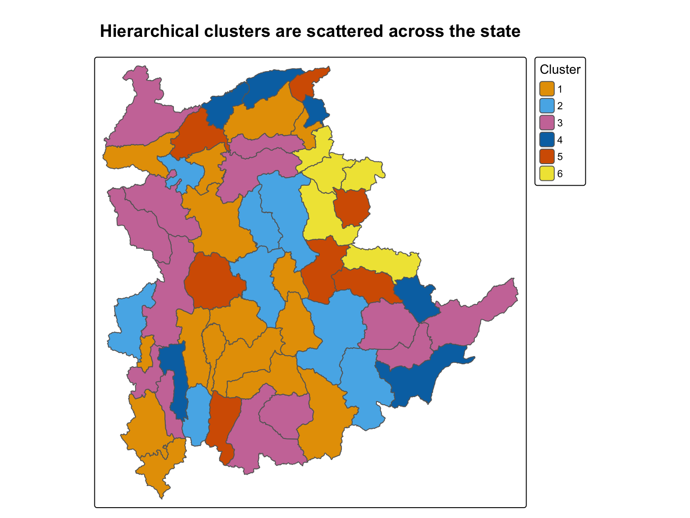
cluster_map <- function(data, var, title, title_size = 1.5) {
tm_shape(data) +
tm_polygons(fill = var,
fill.scale = tm_scale_categorical(values = okabe6),
fill.legend = tm_legend(title = "Cluster",
position = tm_pos_out("right", "center")),
col = "grey40") +
tm_title(title, size = title_size, fontface = "bold")
}
cluster_map(shan_sf_cluster, "CLUSTER",
"Hierarchical clusters are scattered across the state")The clusters are fragmented. Most of them appear in several separate places on the map. This is expected, because hierarchical clustering only looks at the ICT rates and not at location. Two townships far apart can end up in the same cluster if their rates are similar. For a segmentation that can be used to plan by region, this is a problem. The next two methods add location.
7 Spatially Constrained Clustering with SKATER
SKATER stands for Spatial ’K’luster Analysis by Tree Edge Removal. It links neighbouring townships into a minimum spanning tree, then cuts the tree’s edges to form clusters. Each cluster is a piece of the tree, so it is always one connected area.
7.1 Computing the Neighbour List
poly2nb() of spdep builds the Queen contiguity neighbour list.
shan.nb <- poly2nb(shan_sf)
summary(shan.nb)Neighbour list object:
Number of regions: 55
Number of nonzero links: 264
Percentage nonzero weights: 8.727273
Average number of links: 4.8
Link number distribution:
2 3 4 5 6 7 8 9
5 9 7 21 4 3 5 1
5 least connected regions:
3 5 7 9 47 with 2 links
1 most connected region:
8 with 9 linksEvery township has at least 2 neighbours, so there are no islands. This matters because the spanning tree needs every township to be connected.
CautionWhere I differ from the book
The book first converts shan_sf to a SpatialPolygonsDataFrame with as_Spatial(), because older versions of spdep needed sp objects. Current spdep accepts sf directly, so I skip the conversion.
st_centroid() gives each township a point, so the links can be drawn.
coords <- st_coordinates(st_centroid(st_geometry(shan_sf)))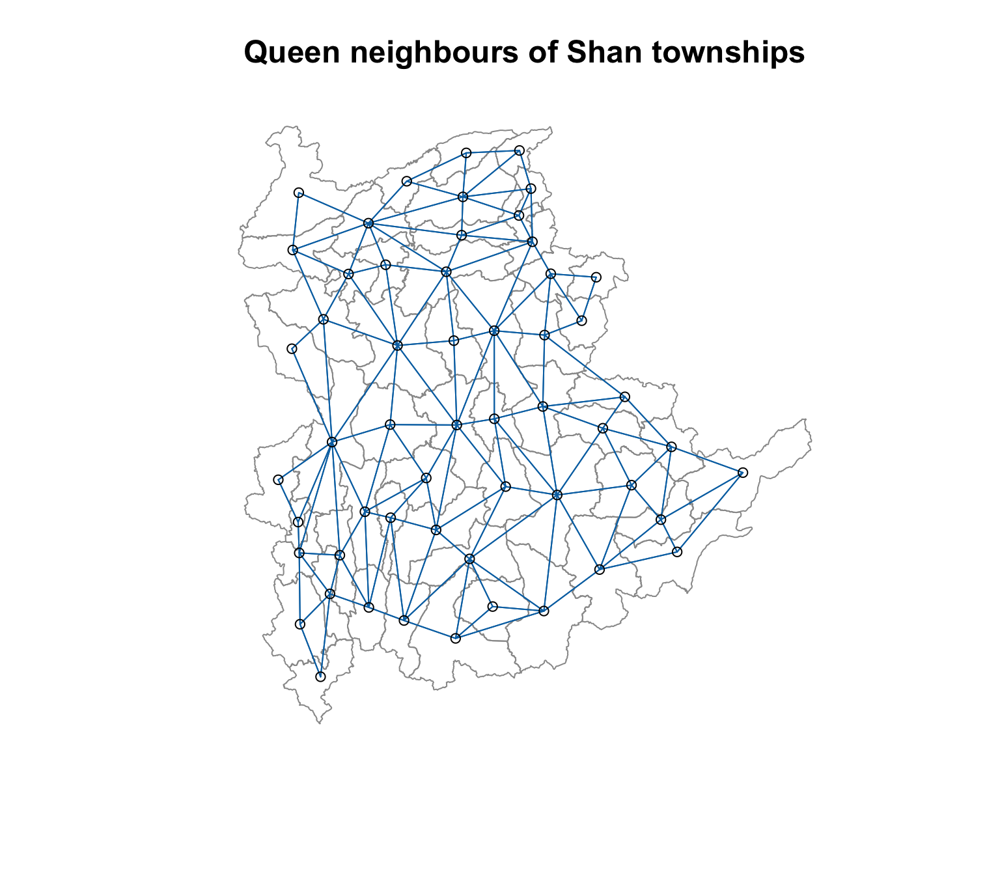
plot(st_geometry(shan_sf), border = "grey60",
main = "Queen neighbours of Shan townships", cex.main = 1.5)
plot(shan.nb, coords, col = "#0072B2", add = TRUE)7.2 Computing the Edge Costs
nbcosts() of spdep computes the cost of each link. The cost is the distance between two neighbouring townships across the five rates, so neighbours with similar ICT profiles have cheap links.
lcosts <- nbcosts(shan.nb, shan_ict)nb2listw() stores the costs as a weights object. style = "B" keeps the costs as they are, without row standardisation.
shan.w <- nb2listw(shan.nb, lcosts, style = "B")
summary(shan.w)Characteristics of weights list object:
Neighbour list object:
Number of regions: 55
Number of nonzero links: 264
Percentage nonzero weights: 8.727273
Average number of links: 4.8
Link number distribution:
2 3 4 5 6 7 8 9
5 9 7 21 4 3 5 1
5 least connected regions:
3 5 7 9 47 with 2 links
1 most connected region:
8 with 9 links
Weights style: B
Weights constants summary:
n nn S0 S1 S2
B 55 3025 76267.65 58260785 5220160047.3 Computing the Minimum Spanning Tree
mstree() of spdep finds the minimum spanning tree. This is the set of links that connects all townships with the lowest total cost and no loops.
set.seed(1234)
shan.mst <- mstree(shan.w)
dim(shan.mst)[1] 54 3head(shan.mst) [,1] [,2] [,3]
[1,] 28 12 78.78999
[2,] 12 49 59.69478
[3,] 28 13 92.79567
[4,] 13 52 110.55197
[5,] 49 35 124.74445
[6,] 35 37 91.65458The tree has 54 links for 55 townships, one fewer than the number of townships, as a tree should. Each row gives the two townships and the cost of the link.
NoteLearning diary
mstree() starts from a random township when ini is not given, so I added set.seed(). I tried a few seeds. The start point changed the order of the rows but not the cluster sizes SKATER produced, because the tree itself is the same.
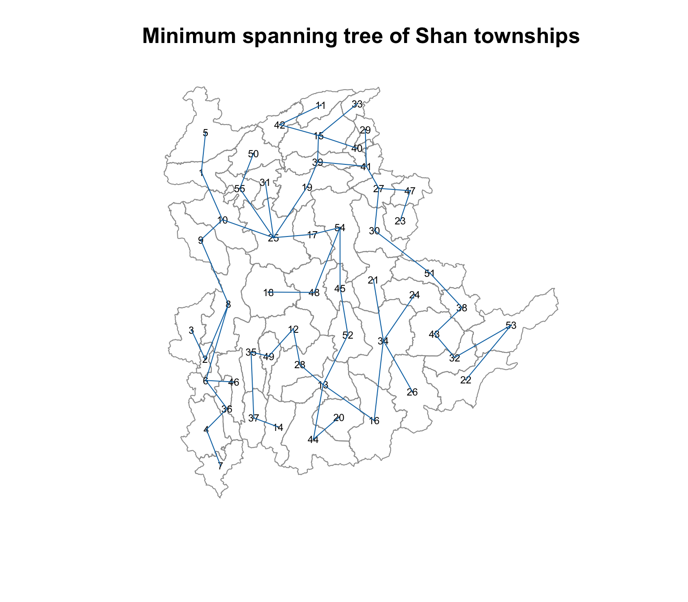
plot(st_geometry(shan_sf), border = "grey60",
main = "Minimum spanning tree of Shan townships", cex.main = 1.5)
plot.mst(shan.mst, coords, col = "#0072B2",
cex.lab = 0.7, cex.circles = 0.005, add = TRUE)Compared with the neighbour map, most links are gone. Each township now connects to the rest of the state by only one path.
7.4 Computing the SKATER Clusters
skater() of spdep cuts the tree. ncuts = 5 makes five cuts, which gives six clusters.
clust6 <- spdep::skater(edges = shan.mst[, 1:2],
data = shan_ict,
method = "euclidean",
ncuts = 5)
ccs6 <- clust6$groups
table(ccs6)ccs6
1 2 3 4 5 6
22 18 11 2 1 1 The clusters are very uneven. There are three large ones and three with only one or two townships.
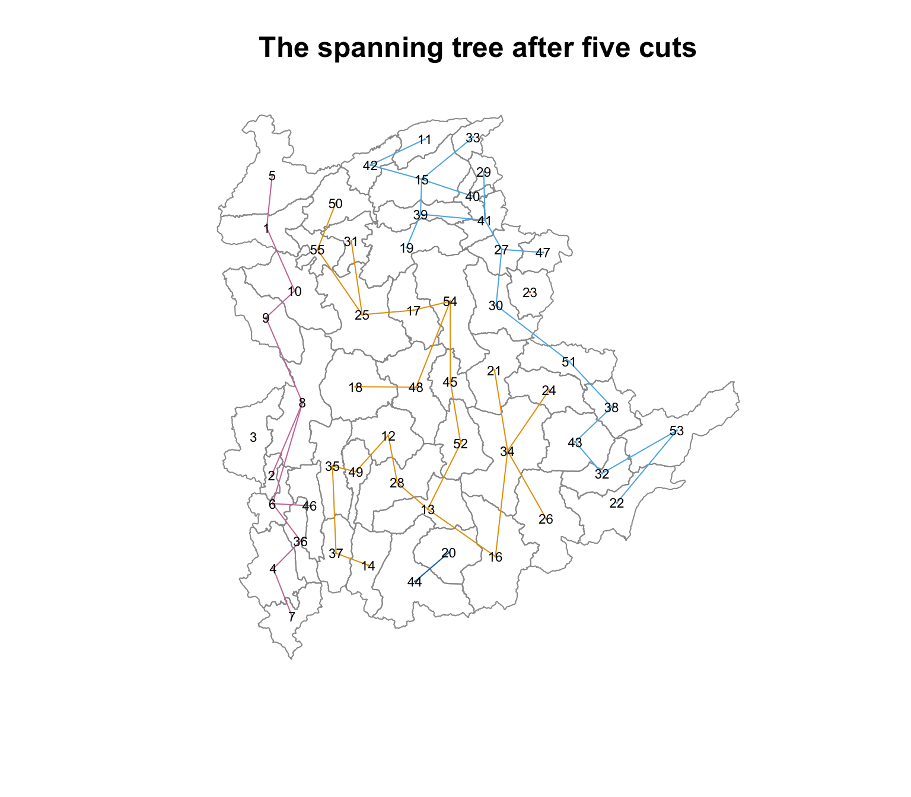
plot(st_geometry(shan_sf), border = "grey60",
main = "The spanning tree after five cuts", cex.main = 1.5)
plot(clust6, coords, cex.lab = 0.7,
groups.colors = okabe6,
cex.circles = 0.005, add = TRUE)
CautionWhere I differ from the book
The book passes five colours, including green, for six groups. I pass okabe6, so each group has its own colour.
7.5 Mapping the SKATER Clusters
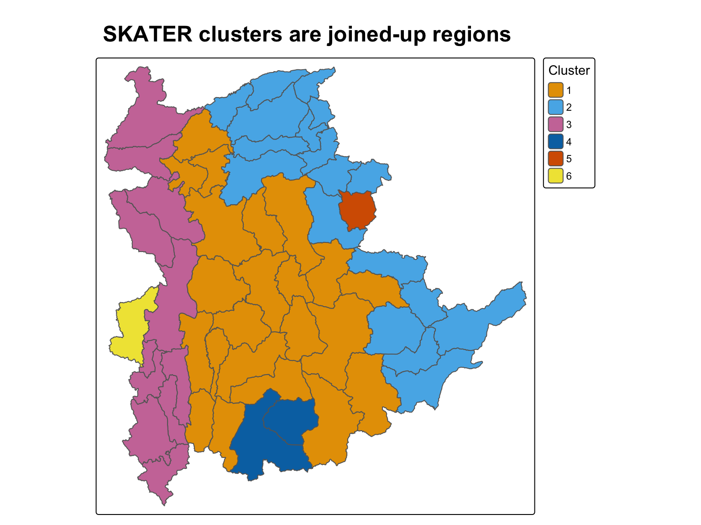
shan_sf_spatialcluster <- shan_sf_cluster %>%
mutate(SP_CLUSTER = as.factor(ccs6))
cluster_map(shan_sf_spatialcluster, "SP_CLUSTER",
"SKATER clusters are joined-up regions")tmap_arrange() puts the two results side by side.
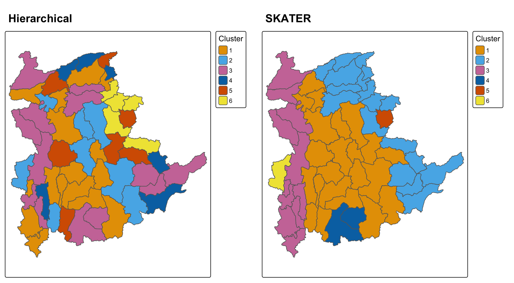
tmap_arrange(cluster_map(shan_sf_cluster, "CLUSTER",
"Hierarchical", title_size = 1.3),
cluster_map(shan_sf_spatialcluster, "SP_CLUSTER",
"SKATER", title_size = 1.3),
ncol = 2)The SKATER map is much easier to read. Each cluster is one region. The cluster numbers do not match between the two maps, since each method numbers its own clusters. The cost is in the cluster sizes. SKATER puts 22 townships in its largest cluster, and three clusters are tiny. A single cut that isolates one unusual township counts as a whole cluster.
8 Spatially Constrained Clustering with ClustGeo
ClustGeo runs Ward’s clustering on a mix of two distance matrices. D0 is the distance between ICT profiles. D1 is the geographic distance. The mixing weight alpha runs from 0 to 1. At 0 only D0 counts, which is ordinary Ward clustering. At 1 only location counts. Unlike SKATER, it does not force clusters to be connected. It only makes nearby townships more likely to join.
8.1 Ward-like Hierarchical Clustering with ClustGeo
hclustgeo() with only D0 gives the non-spatial version.
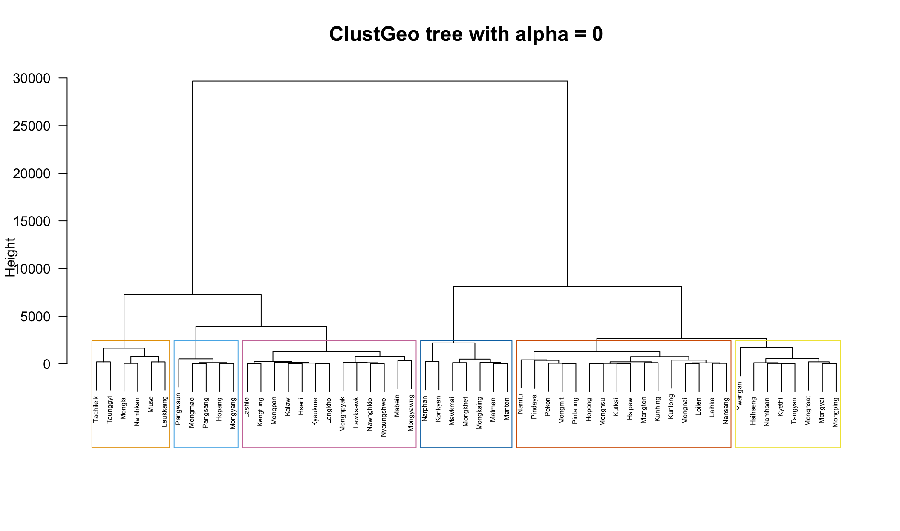
nongeo_cluster <- hclustgeo(proxmat)
plot(nongeo_cluster, cex = 0.5, xlab = "", sub = "",
main = "ClustGeo tree with alpha = 0", cex.main = 1.5, las = 1)
rect.hclust(nongeo_cluster, k = 6, border = okabe6)ngeo_groups <- as.factor(cutree(nongeo_cluster, k = 6))
shan_sf_ngeo_cluster <- shan_sf %>%
mutate(CLUSTER = ngeo_groups)
adjustedRandIndex(ngeo_groups, groups)[1] 1
ImportantCheck that caught something
The book maps these clusters as a new result. I expected them to match my hclust() clusters, since ClustGeo with alpha = 0 is plain Ward clustering. The adjusted Rand index of 1 shows they are the same six groups. ClustGeo squares the distances, like ward.D2. This is also why the book’s two maps differ. The book’s hclust() used ward.D, which does not square them. So I skip the duplicate map.
8.2 Spatially Constrained Hierarchical Clustering
st_distance() of sf computes the distance between every pair of townships. as.dist() turns it into the D1 matrix.
dist <- st_distance(shan_sf, shan_sf)
distmat <- as.dist(dist)
NoteLearning diary
st_distance() on polygons measures the gap between their boundaries, not their centres. So any two townships that touch have a distance of 0. In this matrix 132 pairs are at 0, the same as the 132 pairs of Queen neighbours. ClustGeo treats them all as equally close, whether they share a long border or one corner.
choicealpha() of ClustGeo tries alpha from 0 to 1 in steps of 0.1. For each alpha it reports two scores. Q0 is the share of ICT variation explained by the six clusters, and Q1 is the share of spatial variation explained. Raising alpha gains Q1 and loses Q0.
cr <- choicealpha(proxmat, distmat,
range.alpha = seq(0, 1, 0.1),
K = 6, graph = FALSE)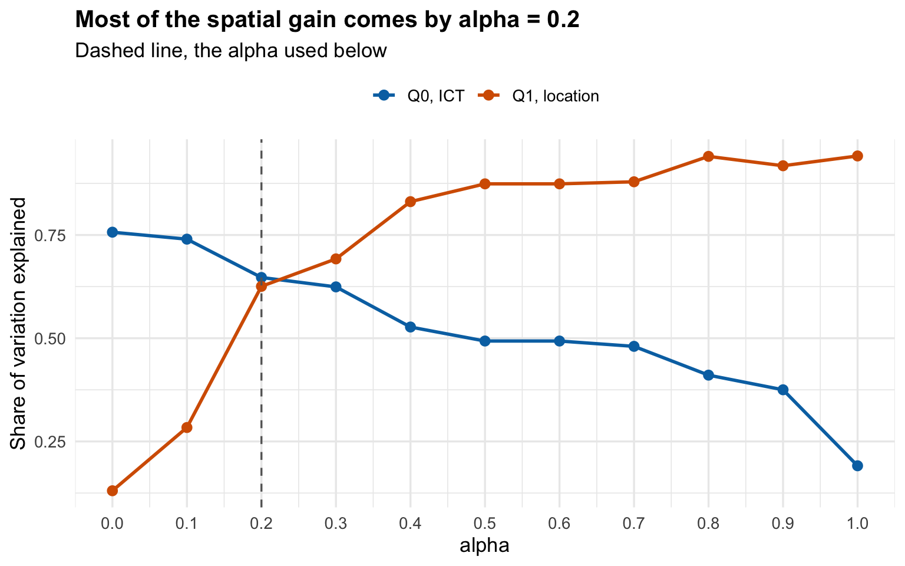
alpha_df <- tibble(alpha = cr$range.alpha,
`Q0, ICT` = cr$Q[, 1],
`Q1, location` = cr$Q[, 2]) %>%
pivot_longer(-alpha, names_to = "score", values_to = "value")
ggplot(alpha_df, aes(x = alpha, y = value, colour = score)) +
geom_line(linewidth = 1) +
geom_point(size = 2.5) +
geom_vline(xintercept = 0.2, linetype = 2, colour = "grey40") +
scale_colour_manual(values = c("#0072B2", "#D55E00")) +
scale_x_continuous(breaks = seq(0, 1, 0.1)) +
labs(x = "alpha", y = "Share of variation explained", colour = NULL,
title = "Most of the spatial gain comes by alpha = 0.2",
subtitle = "Dashed line, the alpha used below") +
theme_minimal(base_size = 13) +
theme(plot.title = element_text(size = 15, face = "bold"),
legend.position = "top")At alpha 0, the clusters explain 76 percent of the ICT variation but only 13 percent of the spatial variation. At alpha 0.2, Q1 jumps to 63 percent while Q0 only falls to 65 percent. After 0.2, each step gives up roughly as much Q0 as it gains in Q1. So 0.2 is a fair compromise, and it is the value the book uses.
CautionWhere I differ from the book
The book sets graph = TRUE and uses ClustGeo’s own plot. I set it to FALSE and draw Q0 and Q1 with ggplot, so the chart has a title, labelled axes and the chosen alpha marked.
hclustgeo() with both matrices and alpha = 0.2 gives the spatially constrained tree.
clustG <- hclustgeo(proxmat, distmat, alpha = 0.2)
groups_geo <- as.factor(cutree(clustG, k = 6))
shan_sf_Gcluster <- shan_sf %>%
mutate(CLUSTER = groups_geo)
table(shan_sf_Gcluster$CLUSTER)
1 2 3 4 5 6
10 9 7 9 12 8 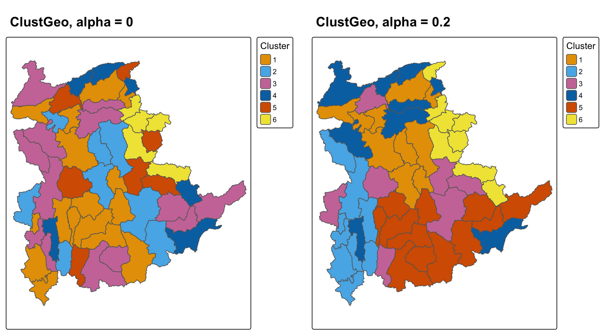
tmap_arrange(cluster_map(shan_sf_ngeo_cluster, "CLUSTER",
"ClustGeo, alpha = 0", title_size = 1.3),
cluster_map(shan_sf_Gcluster, "CLUSTER",
"ClustGeo, alpha = 0.2", title_size = 1.3),
ncol = 2)With alpha 0.2 the clusters are much more compact than at alpha 0, and the sizes are more even, from 7 to 12 townships. But some clusters still have a few townships away from the main block. ClustGeo only pushes nearby townships together. It does not forbid a cluster from being split.
9 Visual Interpretation of Clusters
The book profiles the non-spatial ClustGeo clusters here. I profile the spatially constrained ClustGeo clusters with alpha 0.2 instead, because they are the answer to the segmentation question. The non-spatial clusters are the same as my hclust() ones.
9.1 Visualising One Clustering Variable
geom_boxplot() shows the radio rate in each cluster.
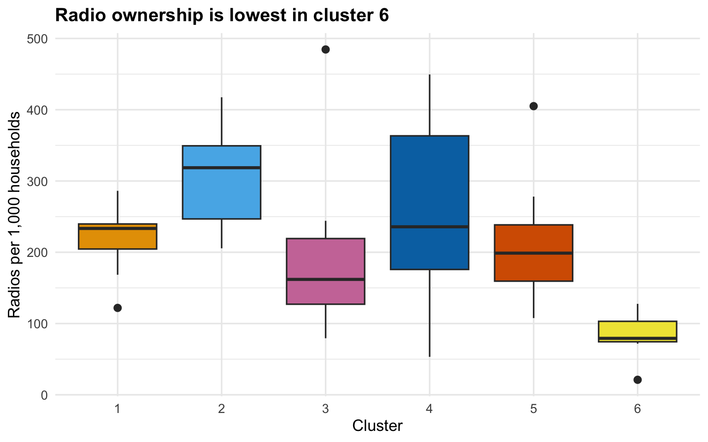
ggplot(shan_sf_Gcluster, aes(x = CLUSTER, y = RADIO_PR, fill = CLUSTER)) +
geom_boxplot(show.legend = FALSE, outlier.size = 2.5) +
scale_fill_manual(values = okabe6) +
labs(x = "Cluster", y = "Radios per 1,000 households",
title = "Radio ownership is lowest in cluster 6") +
theme_minimal(base_size = 13) +
theme(plot.title = element_text(size = 15, face = "bold"))9.2 Multivariate Visualisation
ggparcoord() of GGally draws a parallel coordinate plot, one line per township, split by cluster with facet_grid().
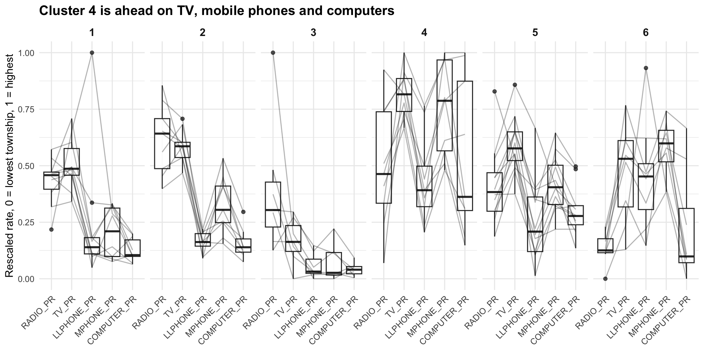
profile_df <- st_drop_geometry(shan_sf_Gcluster)
ict_cols <- c("RADIO_PR", "TV_PR", "LLPHONE_PR", "MPHONE_PR", "COMPUTER_PR")
ggparcoord(data = profile_df,
columns = match(ict_cols, names(profile_df)),
scale = "uniminmax",
alphaLines = 0.3,
boxplot = TRUE,
title = "Cluster 4 is ahead on TV, mobile phones and computers") +
facet_grid(~ CLUSTER) +
labs(x = NULL, y = "Rescaled rate, 0 = lowest township, 1 = highest") +
theme_minimal(base_size = 12) +
theme(plot.title = element_text(size = 15, face = "bold"),
strip.text = element_text(size = 12, face = "bold"),
axis.text.x = element_text(angle = 45, hjust = 1))
CautionWhere I differ from the book
The book uses scale = "globalminmax", which keeps one shared scale for all five rates. Computer and landline rates are so small that their boxes sit flat at the bottom. uniminmax rescales each rate on its own from 0 to 1, so differences in computer ownership show up too. I also find the column positions by name with match() instead of typing c(17:21).
group_by() and summarise() of dplyr give the mean rate in each cluster.
geo_profile <- shan_sf_Gcluster %>%
st_set_geometry(NULL) %>%
group_by(CLUSTER) %>%
summarise(townships = n(),
across(c(RADIO_PR, TV_PR, LLPHONE_PR, MPHONE_PR, COMPUTER_PR),
mean))
kable(geo_profile, digits = 0)| CLUSTER | townships | RADIO_PR | TV_PR | LLPHONE_PR | MPHONE_PR | COMPUTER_PR |
|---|---|---|---|---|---|---|
| 1 | 10 | 221 | 484 | 45 | 180 | 14 |
| 2 | 9 | 307 | 543 | 31 | 265 | 17 |
| 3 | 7 | 203 | 238 | 13 | 88 | 7 |
| 4 | 9 | 250 | 712 | 81 | 557 | 51 |
| 5 | 12 | 213 | 546 | 49 | 329 | 30 |
| 6 | 8 | 84 | 458 | 84 | 440 | 23 |
Reading the table with the map gives six regions.
| Cluster | Profile | Example townships |
|---|---|---|
| 1 | Below average on TV, mobile and computer | Mostly northern Shan, such as Hsipaw and Namtu |
| 2 | The highest radio rate, average or below on the rest | The south west, around Kalaw and Pindaya |
| 3 | The least connected on every item except radio | Ywangan, Mawkmai, Mongkaing |
| 4 | The most connected, with the highest TV, mobile and computer rates | The larger towns, such as Taunggyi, Lashio, Muse and Tachileik |
| 5 | Close to the state average | The south and east, such as Laihka and Mongnai |
| 6 | Very few radios, but high landline and mobile rates | The eastern border, such as Mongmao, Pangsang and Mongla |
Cluster 4 has 557 mobile phones and 51 computers per 1,000 households. Cluster 3 has 88 and 7. Cluster 4 is not one region. It has the state capital Taunggyi in the west, Lashio and Muse in the north, and Tachileik on the Thai border in the far south east. These towns have no neighbours with similar rates, so alpha 0.2 is not enough to pull them into nearby clusters. This fits the last point of the previous section.
10 Beyond the Exercise
The next three checks go past the book. Two helpers are used. r_squared() gives the share of ICT variation the clusters explain, based on the raw rates. count_pieces() counts how many separate areas the clusters make on the map, using the Queen neighbour list. A fully joined-up result with six clusters has six pieces.
r_squared <- function(cl) {
x <- as.matrix(shan_ict)
tss <- sum(scale(x, scale = FALSE)^2)
wss <- sum(sapply(split(as.data.frame(x), cl),
function(d) sum(scale(as.matrix(d), scale = FALSE)^2)))
1 - wss / tss
}
count_pieces <- function(cl) {
sum(sapply(unique(cl), function(k) {
in_k <- cl == k
if (sum(in_k) == 1) return(1)
suppressWarnings(n.comp.nb(subset.nb(shan.nb, in_k))$nc)
}))
}10.1 Raw Rates Against Z-scores
The book clusters on raw rates. To see how much each rate counts, I compare their variances. The squared Euclidean distance is a sum over the five rates, so each rate’s share of the total variance is roughly its share of the distance.
tibble(variable = names(shan_ict),
sd = sapply(shan_ict, sd),
share_of_variance = sapply(shan_ict, var) / sum(sapply(shan_ict, var))) %>%
arrange(desc(share_of_variance)) %>%
kable(digits = c(0, 1, 3))| variable | sd | share_of_variance |
|---|---|---|
| MPHONE_PR | 175.7 | 0.444 |
| TV_PR | 159.4 | 0.366 |
| RADIO_PR | 105.4 | 0.160 |
| LLPHONE_PR | 40.7 | 0.024 |
| COMPUTER_PR | 20.5 | 0.006 |
MPHONE_PR and TV_PR together make up 81 percent of the variance. COMPUTER_PR makes up less than 1 percent. So the raw clustering mostly ignores computer ownership, even though it is one of the five chosen measures.
I rerun the same Ward clustering on the z-scores, where every rate counts equally.
hclust_z <- hclust(dist(shan_ict.z), method = "ward.D2")
groups_z <- as.factor(cutree(hclust_z, k = 6))
shan_sf_zcluster <- shan_sf %>% mutate(CLUSTER = groups_z)
adjustedRandIndex(groups, groups_z)[1] 0.317144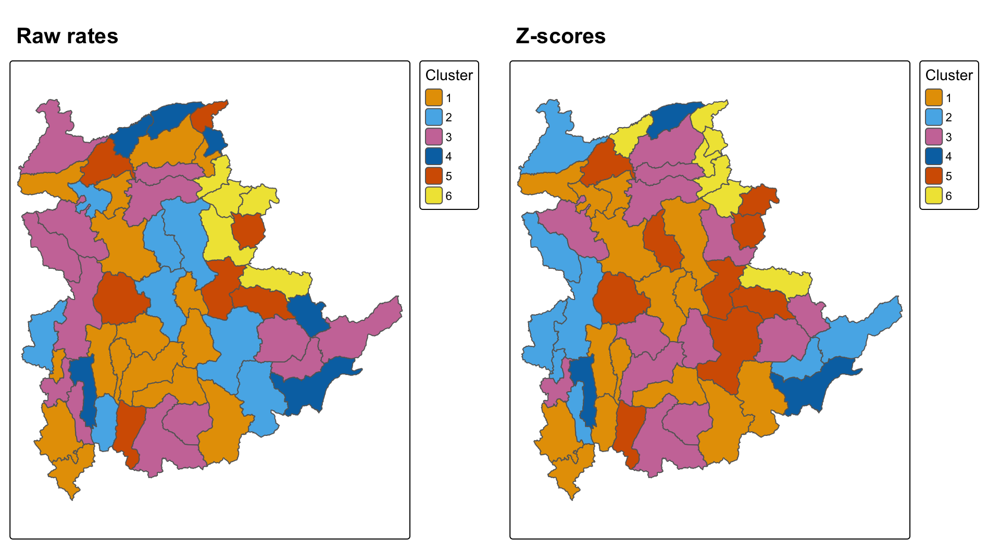
tmap_arrange(cluster_map(shan_sf_cluster, "CLUSTER",
"Raw rates", title_size = 1.3),
cluster_map(shan_sf_zcluster, "CLUSTER",
"Z-scores", title_size = 1.3),
ncol = 2)
TipAlternative explored
The two results agree with an adjusted Rand index of only 0.32. Scaling changed the clusters a lot, not just at the edges. With z-scores, landline and computer rates count as much as TV and mobile. The six most connected townships under the raw rates were Muse, Tachileik, Laukkaing, Mongla, Namhkan and Taunggyi. Under z-scores that top group shrinks to Muse, Tachileik, Taunggyi, the three townships with the highest computer rates. Laukkaing and Namhkan move to a group with the most landlines, and Mongla joins a middle group.
Neither version is wrong. They answer different questions. The raw version groups townships mostly by TV and mobile phone use. The z-score version weighs all five measures equally. Since the book chose five measures on purpose, I think the z-score version fits the question better.
10.2 How Many Clusters
The gap statistic picked one cluster. I check six against two other common measures for the same Ward tree. The average silhouette width shows how well each township fits its own cluster compared with the next closest, and higher is better. The elbow method shows how much within-cluster variation is left as clusters are added.
k_check <- tibble(k = 2:10) %>%
mutate(silhouette = map_dbl(k, ~ mean(silhouette(cutree(hclust_ward, .x),
proxmat)[, 3])),
unexplained = map_dbl(k, ~ 1 - r_squared(cutree(hclust_ward, .x))))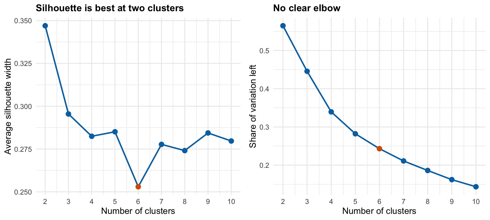
k_plot <- function(y, ylab, title) {
ggplot(k_check, aes(x = k, y = .data[[y]])) +
geom_line(colour = "#0072B2", linewidth = 1) +
geom_point(aes(colour = k == 6), size = 3, show.legend = FALSE) +
scale_colour_manual(values = c("#0072B2", "#D55E00")) +
scale_x_continuous(breaks = 2:10) +
labs(x = "Number of clusters", y = ylab, title = title) +
theme_minimal(base_size = 13) +
theme(plot.title = element_text(size = 14, face = "bold"))
}
ggarrange(k_plot("silhouette", "Average silhouette width",
"Silhouette is best at two clusters"),
k_plot("unexplained", "Share of variation left",
"No clear elbow"),
ncol = 2)
TipAlternative explored
None of the three measures points to six. The silhouette is highest at two clusters, 0.347. At six it is 0.253, the lowest of all the values I tried. The elbow curve falls smoothly with no clear bend. Six clusters still leave 24 percent of the variation unexplained.
So six is a choice for usefulness, not something the data shows. Two clusters would only split the more connected townships from the less connected ones. That is too coarse for planning, so six is reasonable. But a silhouette around 0.25 means the clusters overlap a lot, and townships near the edges could easily go either way.
10.3 What the Spatial Constraint Costs
I put the three main results in one table. It shows how much ICT variation each one explains, how many separate pieces it makes on the map, and how close it is to the plain hclust() result.
solutions <- list(`Hierarchical (ward.D2)` = groups,
`SKATER` = ccs6,
`ClustGeo, alpha = 0.2` = groups_geo)
cost_table <- tibble(method = names(solutions),
ict_explained = map_dbl(solutions, r_squared),
map_pieces = map_dbl(solutions, count_pieces),
cluster_sizes = map_chr(solutions,
~ paste(sort(table(.x), decreasing = TRUE),
collapse = ", ")),
ari_vs_hierarchical = map_dbl(solutions,
~ adjustedRandIndex(.x, groups)))
kable(cost_table, digits = 2)| method | ict_explained | map_pieces | cluster_sizes | ari_vs_hierarchical |
|---|---|---|---|---|
| Hierarchical (ward.D2) | 0.76 | 28 | 16, 13, 8, 7, 6, 5 | 1.00 |
| SKATER | 0.50 | 6 | 22, 18, 11, 2, 1, 1 | 0.18 |
| ClustGeo, alpha = 0.2 | 0.65 | 18 | 12, 10, 9, 9, 8, 7 | 0.26 |
TipAlternative explored
The table shows the trade-off in numbers. Hierarchical clustering explains the most ICT variation, 76 percent, but its six clusters break into 28 separate pieces on the map. SKATER gives exactly 6 pieces, one per cluster, but explains only 50 percent, and it has single-township clusters. ClustGeo sits in between, with 65 percent explained and 18 pieces.
I expected ClustGeo at alpha 0.2 to look much like SKATER, because the map was so much tidier than at alpha 0. But 18 pieces is still a lot of fragments. Most of them come from clusters 3 and 4, the least and the most connected townships. Extreme townships have no similar neighbours, so ClustGeo leaves them where their rates fit. Both spatial methods are also far from the hierarchical result, with adjusted Rand indexes of 0.18 and 0.26. So the choice of method changes the answer more than any setting within a method.
For planning by region I would use SKATER, because the clusters have to be single areas. I would merge its tiny clusters into their neighbours. ClustGeo is better when a few separate townships are acceptable and the clusters need to stay similar inside.
11 Limitations
- The data is from the 2014 census. Mobile phone and internet use in Myanmar has changed a lot since then, so the clusters describe 2014 and not today.
- Rates per 1,000 households hide size. A township with 3,000 households counts the same as one with 80,000, so a few small townships can shape a cluster.
- Every result depends on choices I made. These include using raw rates or z-scores,
ward.Dorward.D2, six clusters and alpha 0.2. The adjusted Rand indexes above show some of these choices change the clusters a lot. - None of the three measures for the number of clusters supports six. The silhouette at six is low, so cluster membership near the edges is not stable.
- SKATER and ClustGeo use different ideas of nearness. SKATER uses Queen contiguity, and ClustGeo uses boundary distance, which is zero for all touching townships. So the two spatial results are not directly comparable.
12 Reflections
Here are four things I learned from this exercise.
The scale of the variables decides the clusters. I knew in theory that unscaled variables get unequal weight. Here TV and mobile phone made up most of the variance and computer ownership almost none. Switching to z-scores changed the result so much that it barely matched. I will check variance shares before clustering in future.
ward.D and ward.D2 are different methods. I did not know R has two Ward options until I checked why the book’s hclust() map and its ClustGeo map at alpha 0 differ. The check showed ClustGeo uses the squared version. Using ward.D2 throughout made the parts of the chapter agree.
The number of clusters is a judgement. The gap statistic said one, the silhouette said two, and the book used six. I now see these measures as a guide, and the final number has to be justified by what the clusters are used for.
Spatial constraints are a trade-off. Adding location made the maps easier to read but cost ICT similarity. SKATER guarantees joined-up regions but gives uneven sizes. ClustGeo stays closer to the data but leaves fragments. The table in the last section helped me see which method fits which purpose.